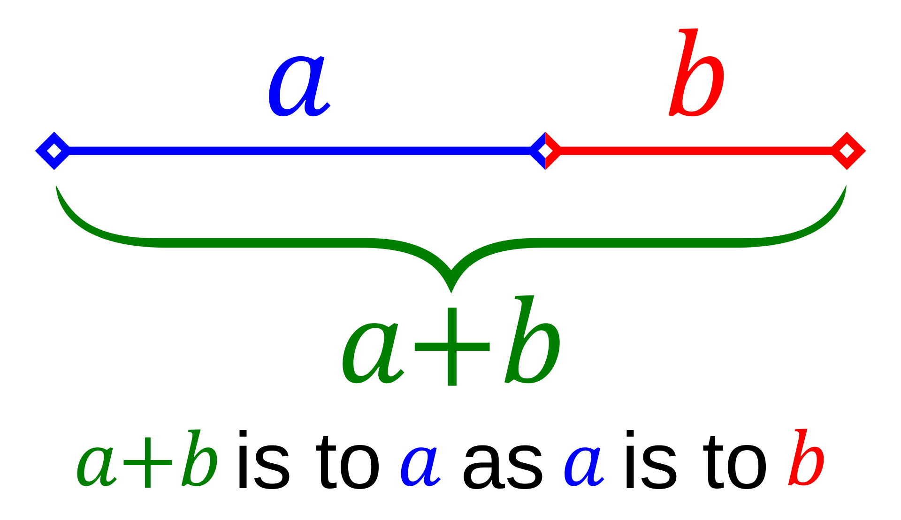

Golden Ratio Framework
This website provides guidance on the various aspects of the golden ratio design framework.
It should be used to keep designs, whether print or web, consistent.
Design Framework - Bootstrap
All layout and design components are based around bootstrap standards. From this, overrides can be applied to give a particular 'look'.
https://getbootstrap.com/docs/4.0/components
Design methodology - The golden ratio
The golden ratio has been chosen as the basis for the framework as it provides a constitent methodology to apply to any component, whether font size or hero image size.
"Two quantities are in the golden ratio if their ratio is the same as the ratio of their sum to the larger of the two quantities. The figure below illustrates the geometric relationship."
{kind=link}
Putting this into practice with font sizes for example, 16px is the body font size, so will be the 'shortest side', then 26px would need to be the 'longest' to keep them in the golden ratio. The sum of these two sizes is 42px.
This means you would end up with three font sizes to use on the website.
The hero image height has been chosen by taking the button height size and multiplying by 15. This forms the largest size in the layout ratio. The smallest size is then calculated using the golden ratio, which is 390px. This is the height of each call to action section.
For more information on the golden ratio, please visit https://en.wikipedia.org/wiki/Golden_ratio